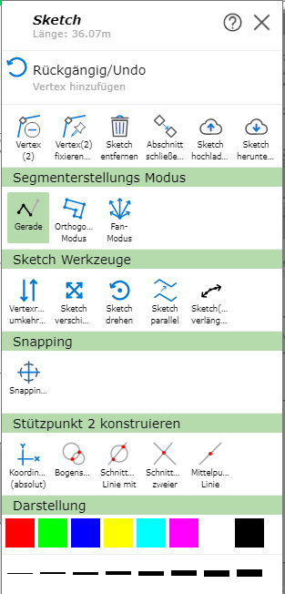
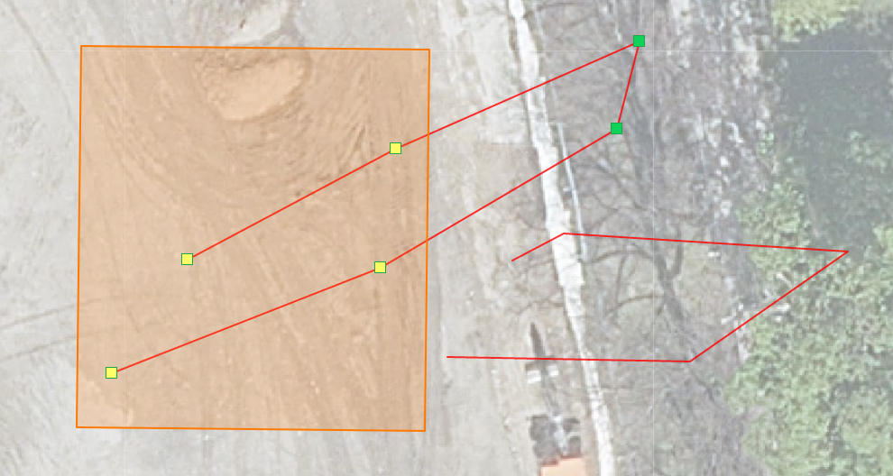
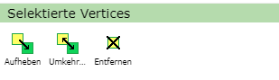

Sketch/Drafting Tools¶
When drawing a sketch (e.g. when using map markup, editing, creating an elevation profile, …), several options are available that can be very helpful depending on the application.
To access them, right-click on the sketch or on the map while drawing. Depending on the type of the sketch (line, polygon), the following options are offered:

Note
On (mobile) devices with touch operation, clicking on the map works via the Click Bubble tool (see the Click Bubble section under Tools). The advantage of Click Bubble is that it avoids accidental clicks while navigating and offers higher precision when clicking.
Undo¶
With Undo, the last commands, which are shown in gray under Undo, can be undone.
Note
There is no Redo.
Editing Vertices¶
Vertices are the so-called support points of the line, which can be edited afterward in various ways.
Move vertex: Click on the vertex and drag it to the desired position while holding down the mouse button.
Add vertex: There are several ways to do this: click on the map, use Direction/Distance (see below), or use Coordinates (absolute) (see Construct).
Add vertex on an existing line: Right-click on the line and then select Add Vertex.
Remove vertex: Right-click on the vertex and then select Remove Vertex.
Fix/anchor vertex: Right-click on the vertex and then select Fix/Anchor Vertex. These vertices then remain fixed when moving and shifting, and are shown as larger blue points. With a right-click and then Remove Fixing, the vertex’s fixing can be removed again.
Shortcuts¶
|
Set a new vertex on a line segment |
|
Delete vertex: hold down the |
|
Activates/deactivates orthogonal mode |
|
Activates/deactivates trace mode |
|
Show snapping dialog |
|
Undo |
|
While held down, vertices can be selected (see below) |
Selecting Vertices¶
With Ctrl, several vertices can be selected. To do this, while holding down the Ctrl key, you can either select several vertices by clicking on them, or drag a rectangle with the mouse, which selects all vertices located within the rectangle.

The following new options then appear in the right-click menu:

Clear: Clears the selection.
Invert: Inverts the selection of vertices.
Remove: Removes all selected vertices.
Removing the Sketch¶
With Remove Sketch, the drawn sketches are removed. If this command was executed unintentionally, the sketches can be restored using Undo.
In most tools, the sketch can also be removed via the Remove Sketch button on the left side of the menu.
Closing Section/Starting New¶
With Close Section/Start New, the current sketch is finished and a new sketch can be started.
This allows several lines/polygons to be drawn.